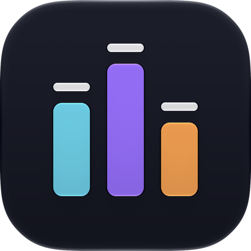

The terminal app, included with Resonance for Mac
The whole collection.
One command.
Type resonance and the player on your Mac opens in your terminal: your playlists,
60,000 tunes, what each one sounds like, and the music full screen in fire.
It's the same player as the window, so the two stay in step.
Fingerprints
See how a tune sounds
before you hear it.
Resonance listens to every tune once and keeps nine numbers about it. In the terminal they're
nine bars, always in the same order and colors, so tunes that sound alike look alike down a list.
Press L on one, and you get the tunes closest to it across the whole collection.
Press it again on one of those, and keep going.
Visuals
Then press v.
The music takes the whole window.
Five pictures made of nothing but characters, each one moved by the three voices of the tune. It looks best in a terminal with millions of colors, such as iTerm2, Ghostty or Kitty.
- Fire f
Each voice feeds its own part of the flames, and hits throw sparks.
- Skull s
A 3D skull in ASCII. Its eyes glow with the voices and its jaw chomps on the hits.
- Tesla t
Three coils. The higher a voice plays, the higher its lightning strikes.
- Water w
Every note is a drop in a pool: wide ripples for low notes, tight ones for high.
- Sphere o
The app's Particle sphere, turning in points of light.
Commands
A remote control
for everything else.
Every button in the app is a command too. Play, skip and favorite from a script, describe what
you'd like to hear in a sentence, or pipe a search straight into a playlist. Lists print
tab-separated when piped, and anything that answers takes --json.
# What's playing? ❯ resonance now ♪ Commando · Rob Hubbard 1:14 / 3:56 # Say what you'd like to hear ❯ resonance describe fast arpeggios from 1987 # More like this one, please ❯ resonance like --play # Everything by Hubbard, into a playlist ❯ resonance search hubbard | resonance playlist add Hubbard # Pick a few by hand, and add those ❯ resonance playlist add "Late Night" $(resonance pick --multi) # A tune when the build is done ❯ rdone make release
Keys
Your keys.
Vim, Emacs, or neither.
The terminal app looks at your editor and answers to the keys your hands already know. Choose a set here, and the terminal at the top of the page follows.
It reads $VISUAL, then $EDITOR: Vim and Neovim get Vim keys, Emacs gets Emacs keys. To choose for yourself, run resonance --keys vim, emacs or normal, or set RESONANCE_KEYS for good. Press ? for every key.
And more
It goes deeper than it looks.
Under the hood
Press u and a tracker slides up: the notes, instruments, arpeggios and slides the tune is playing, with what's coming below. tab steps on to the chip's registers, sweeps and pitch.
Describe
Write “fast arpeggios from 1987” and get a playlist. It says what it understood, and n saves the list.
Scrub
Press t and pick a point with the arrow keys, or press 0 to 9 for that tenth of the tune. ↵ goes there.
zsh and Oh My Zsh
Completions that know your playlists' names, short commands, and the tune playing in your prompt.
rn next rp pause or play rs surprise me rl more like this rf favorite rq what's playing
Claude and other assistants
Ask for “something like Commando but darker”. An assistant can search, play and make playlists, but it can't delete one.
claude mcp add resonance -- resonance mcp
Credits
Press c for the credits, a small demo of their own with a nod to the demoscene.

Included
It's already in Resonance.
Install it from Settings → Integrations → Command Line Tool. Then type resonance in any terminal.
- macOS 27 or later
- Any terminal
- Free & open source
Questions
Good to know
Do I need the Mac app?
Yes. The command is a remote control: the app plays everything, so the window, the terminal and every shortcut are the same player. If the app isn't running, it starts in the background.
Which terminals does it work in?
All of them. It looks its best with millions of colors, as in iTerm2, Ghostty or Kitty. Terminal has 256, and the app picks the nearest of those.
Is the terminal on this page the real thing?
It's a drawing of it that runs in your browser. The tunes, their fingerprints and what sounds like what are real, taken from Resonance. It knows a few hundred tunes and makes no sound; the real one knows them all.
What music does it play?
The music of the Commodore 64: the 60,000 tunes of the High Voltage SID Collection, the home computer's soundtrack from the 1980s to today.